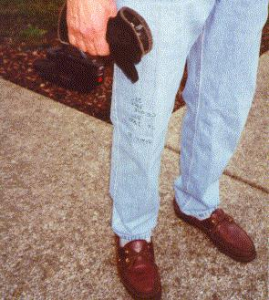

Here are some photos from the first flight on December 6, 2000. A nice story
(from an actual interview with Mr. Moss!) and professional rendition of my videos,
please click here.

Jim shown "saddling up" (parachute) behind the plane.

Who says we ain't prepared? Jim had his flight test card written on his leg.
He used 37" and 2300 for takeoff, and 23" and 1900 for cruise, which got 200mph.

Fired up and taxiing out.

Jim after a successful first flight. I think the look is of satisfaction...

The "factory" inside crew: Tom Jensen (welding), Jim (honcho, sheet metal, systems,
and banking), Dave Gauthier (machining), and Ken Brynestad (wings).

The "factory" outside crew (fabric): Glen, Jim and John Cawley, with Jim.
Back to Laird home page.